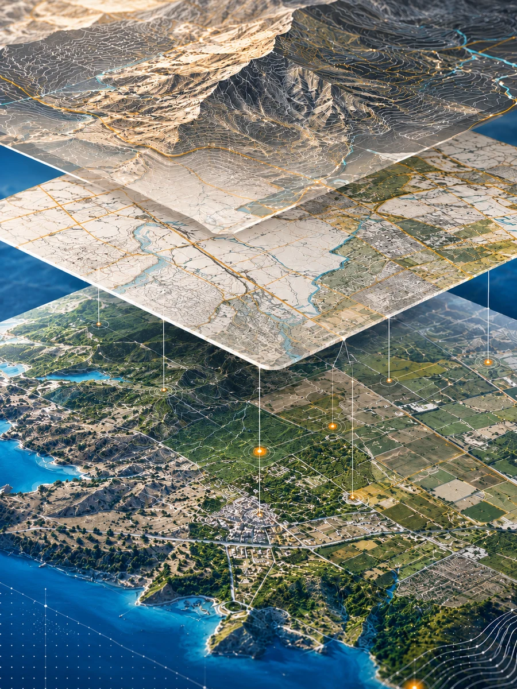
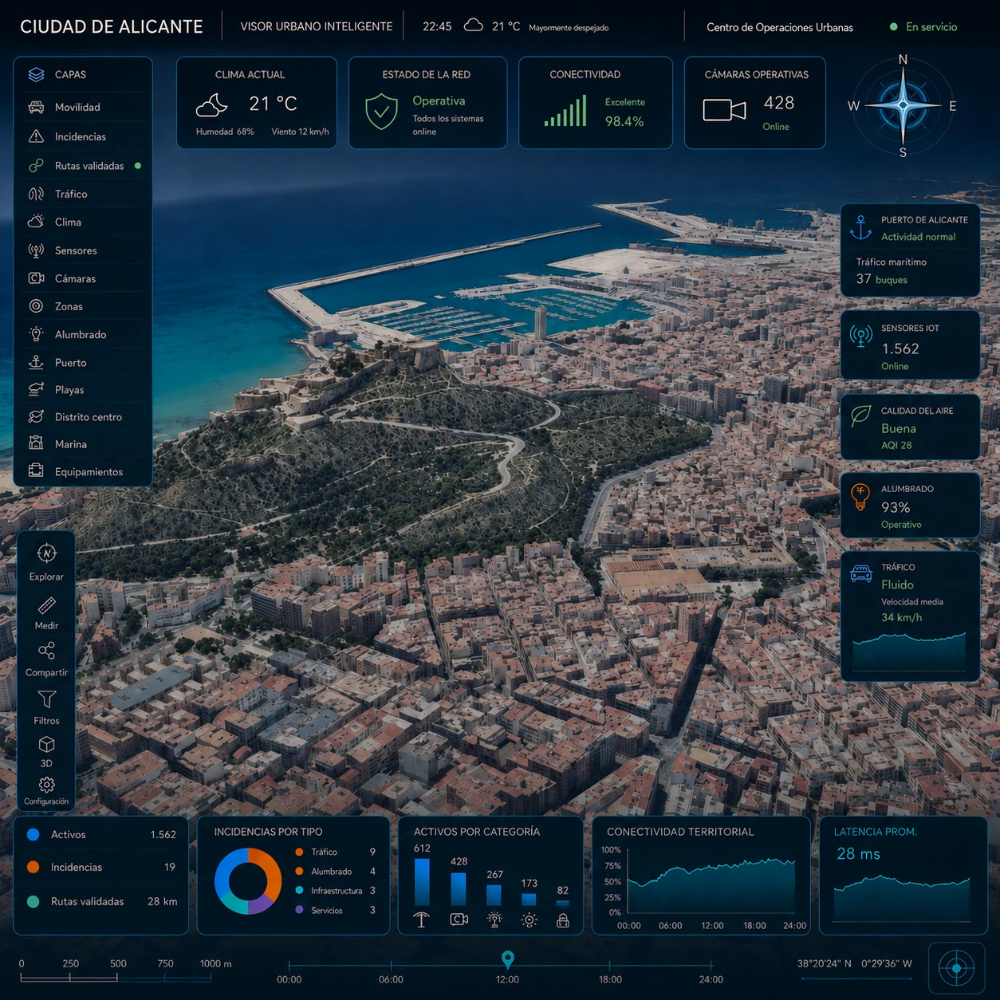

Apoyo cartográfico
- Mapas de proyecto
- Bases georreferenciadas
- Cartografía de apoyo
- Base CAD/GIS
Cartografía aplicada · GIS · Territorio
Apoyo cartográfico para analizar y representar el territorio con precisión.
Servicios
Cartografía de apoyo · GIS · GML - IVG · Inventario de activos · Modelos 3D · Dashboards


GML, IVG, comprobaciones geométricas y memoria cartográfica cuando el encargo lo requiera.
Saber más
Modelos 3D para visualizar propuestas, revisar volúmenes y comunicar resultados con mayor claridad.
Saber más
Inventario de activos con datos georreferenciados, trazabilidad y soporte cartográfico para consulta y mantenimiento.
Saber másEvaluación espacial y análisis territorial para apoyar decisiones basadas en datos verificables.
Saber más
Lectura cartográfica de movilidad, accesibilidad y redes para valorar alternativas de proyecto.
Saber másCasos de uso
 Movilidad y transporte
Movilidad y transporte Ordenación del territorio
Ordenación del territorio Catastro y Registro
Catastro y Registro Planificación urbanística
Planificación urbanística Medioambiente
Medioambiente Operaciones y activos
Operaciones y activos Modelos 3D
Modelos 3D
Visualización técnicaGabinete cartográfico
Apoyamos a equipos públicos y privados con cartografía, GIS y lectura territorial para convertir datos dispersos en criterios útiles de proyecto.
Entendemos el reto, la información de partida y el contexto operativo.
Preparamos cartografía, GIS, inventarios y modelos de apoyo.
Convertimos resultados en criterios claros y verificables.


Datos y proyecto
Ordenamos datos aportados, GIS, modelos 3D y documentación técnica para construir una base cartográfica fiable.

Gestión de activos
Organización cartográfica de activos, redes y servicios para consultar, actualizar y tomar mejores decisiones.
Preguntas frecuentes
Cartografía de apoyo, base GIS, GeoPackage, GML/IVG cuando proceda, inventario, modelos 3D, Dashboards, memoria cartográfica e informe técnico.
Para equipos de arquitectura, urbanismo, ingeniería, consultoras, administraciones y profesionales que necesitan apoyo cartográfico externo.
Ámbito, datos disponibles, objetivo y formato de entrega. Con eso se define una propuesta clara.
No. Refuerza la parte cartográfica y documental sin sustituir firmas ni competencias profesionales de otros especialistas.
Contacto
Cuéntanos qué datos tienes, qué necesitas resolver y qué resultado esperas. Te ayudamos a convertir el ámbito de trabajo en criterios útiles para avanzar.